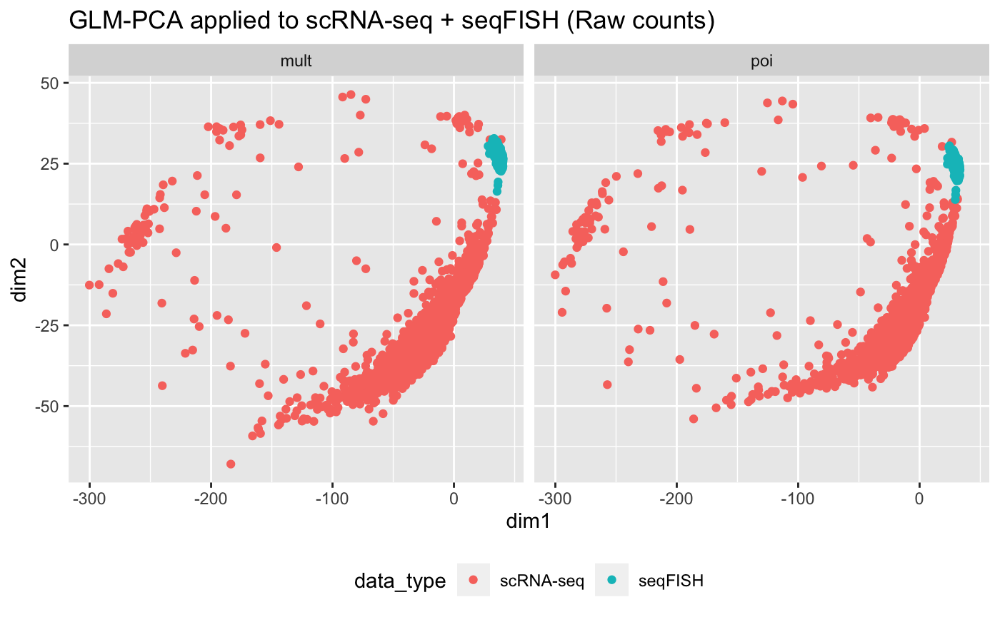

seqFISH and scRNASeq integration using Semi-Supervised Elastic Net (ssenet) - data compilation
Amrit Singh1
Source:vignettes/seqfish_ssenet_data_compilation.Rmd
seqfish_ssenet_data_compilation.RmdImport quantile normalized data from Zhu et al 2018: seqFISH paper
q_scrnaseq_data <- read.delim(here::here("inst", "extdata", "tasic_training_b2.txt"), row.names = 1, header = FALSE) q_scrnaseq_cellLabels <- read.delim(here::here("inst", "extdata", "tasic_labels.tsv"), header = FALSE) colnames(q_scrnaseq_data) <- gsub("-", ".", q_scrnaseq_cellLabels$V2) all(ncol(q_scrnaseq_data) == nrow(q_scrnaseq_cellLabels)) ## do the number of cells match?
## [1] TRUEq_seqfish_data <- read.delim(here::here("inst", "extdata", "seqfish_cortex_b2_testing.txt"), row.names = 1, header = FALSE) q_seqfish_cellLabels <- read.delim(here::here("inst", "extdata", "seqfish_labels.tsv"), row.names = 1, header = FALSE) all(ncol(q_seqfish_data) == nrow(q_seqfish_cellLabels)) ## do the number of cells match?
## [1] TRUEall(rownames(q_scrnaseq_data) == rownames(q_seqfish_data)) ## are the genes in the same order in both datasets
## [1] TRUEImport raw counts data from Zhu et al 2018: seqFISH paper
- scRNASeq data (GSE71585_RefSeq_counts.csv.gz) obtained from GEO (https://www.ncbi.nlm.nih.gov/geo/query/acc.cgi?acc=GSE71585)
- seqFISH data obatined from the Qian Zhu
# Import gene counts for scRNAseq and seqFISH data seqfish_files <- grep("fcortex.gene", list.files(here::here("inst", "extdata", "seqfish_raw_gene_counts/genes"), full.names = TRUE), value = TRUE) genes <- seqfish_files %>% strsplit(., "fcortex.gene.") %>% lapply(., function(i){ gsub(".txt", "", i[2]) }) %>% unlist() %>% tolower() seqfish_data <- lapply(seqfish_files, function(i) { read.table(i, sep=' ', row.names = 1) }) %>% do.call(cbind, .) colnames(seqfish_data) <- genes seqfish_data <- t(seqfish_data[, intersect(rownames(q_seqfish_data), genes)]) ## scrnaseq scrnaseq_data <- read.csv(here::here("inst", "extdata","GSE71585_RefSeq_counts.csv"), row.names = 1) # https://www.ncbi.nlm.nih.gov/geo/query/acc.cgi?acc=GSE71585 rownames(scrnaseq_data) <- tolower(rownames(scrnaseq_data)) scrnaseq_data <- scrnaseq_data[intersect(rownames(q_scrnaseq_data), rownames(scrnaseq_data)), colnames(q_scrnaseq_data)] ## make sure all datasets have the same number of genes common_genes <- Reduce(intersect, list(rownames(q_scrnaseq_data), rownames(q_seqfish_data), rownames(scrnaseq_data), rownames(seqfish_data))) seqfish_data <- seqfish_data[common_genes, ] q_seqfish_data <- q_seqfish_data[common_genes, ] scrnaseq_data <- scrnaseq_data[common_genes, ] q_scrnaseq_data <- q_scrnaseq_data[common_genes, ]
Visual the scRNA-seq data and seqFISH quantile normalized data
Histogram
combined_data <- rbind(t(q_scrnaseq_data), t(q_seqfish_data)) rownames(combined_data) <- paste0("cell", 1:nrow(combined_data)) celltypes <- c(as.character(q_scrnaseq_cellLabels$V1), rep("seqFISH", ncol(q_seqfish_data))) data_type <- rep(c("scRNA-seq", "seqFISH"), c(ncol(q_scrnaseq_data), ncol(q_seqfish_data))) combined_data %>% as.data.frame() %>% mutate(data = data_type) %>% gather(gene, exp, -data) %>% ggplot(aes(x=exp, fill=data)) + geom_histogram() + geom_density() + theme_bw() + ylab("Frequency") + xlab("Gene expression") + ggtitle("Histograms of scRNA-seq and seqFISH data")

PCA
pca <- prcomp(combined_data, scale. = TRUE) fviz_pca_ind(pca, label="none", habillage=data_type, addEllipses=TRUE, ellipse.level=0.80) + theme(legend.position = "bottom") + ggtitle("PCA applied to scRNA-seq + seqFISH (Quantile normalized data)")
data normalization issues between scRNA-seq and seqFISH data!
Visual the scRNA-seq data and seqFISH raw count data
Histogram
combined_data <- rbind(t(scrnaseq_data), t(seqfish_data)) rownames(combined_data) <- paste0("cell", 1:nrow(combined_data)) data_type <- rep(c("scRNA-seq", "seqFISH"), c(ncol(scrnaseq_data), ncol(seqfish_data))) combined_data %>% as.data.frame() %>% mutate(data = data_type) %>% gather(gene, exp, -data) %>% ggplot(aes(x=exp, fill=data)) + geom_histogram() + geom_density() + theme_bw() + scale_x_log10() + ylab("Frequency") + xlab("Gene expression") + ggtitle("Histograms of scRNA-seq and seqFISH data")
PCA
Raw counts
pca <- prcomp(combined_data, scale. = TRUE) fviz_pca_ind(pca, label="none", habillage=data_type, addEllipses=TRUE, ellipse.level=0.80) + theme(legend.position = "bottom") + ggtitle("PCA applied to scRNA-seq + seqFISH (Raw counts)")
GLM-PCA
Raw counts
families <- c("poi", "mult") lapply(families, function(i){ glmpca(t(combined_data), L=2, fam = i)$factors }) %>% do.call(rbind, .) %>% mutate(family = rep(families, each = nrow(combined_data)), data_type = rep(data_type, length(families))) %>% ggplot(aes(x = dim1, y=dim2, color = data_type)) + geom_point() + facet_wrap(~family) + theme(legend.position = "bottom") + ggtitle("GLM-PCA applied to scRNA-seq + seqFISH (Raw counts)")

considerable differences between data distributions
log2 CPM: t(log2(t(counts + 0.5)/(lib.size + 1) * 1e+06))
cpm_scrnaseq_data <- log2(t(t(scrnaseq_data) + 0.5)/(colSums(t(scrnaseq_data)) + 1) * 1e+06) cpm_seqfish_data <- log2(t(t(seqfish_data) + 0.5)/(colSums(t(seqfish_data)) + 1) * 1e+06) cpm <- cbind(cpm_scrnaseq_data, cpm_seqfish_data) pca <- prcomp(t(cpm), scale. = TRUE) fviz_pca_ind(pca, label="none", habillage=data_type, addEllipses=TRUE, ellipse.level=0.80) + theme(legend.position = "bottom") + ggtitle("PCA applied to scRNA-seq + seqFISH (log2 CPM)")
Combat correction
cpm <- cbind(cpm_scrnaseq_data, cpm_seqfish_data) combat_cpm = ComBat(dat=cpm, batch=data_type, mod=NULL, par.prior=TRUE, prior.plots=FALSE)
## Standardizing Data across genescpm_combat_scrnaseq <- t(combat_cpm[, colnames(cpm_scrnaseq_data)]) cpm_combat_seqfish <- t(combat_cpm[, colnames(cpm_seqfish_data)]) pca <- prcomp(t(combat_cpm), scale. = TRUE) fviz_pca_ind(pca, label="none", habillage=data_type, addEllipses=TRUE, ellipse.level=0.80) + theme(legend.position = "bottom") + ggtitle("PCA applied to scRNA-seq + seqFISH (log2 CPM Combat corrected)")
extract common sources of variation using Partial Least Squares
PLS
result <- pls(cpm_scrnaseq_data, cpm_seqfish_data, scale = TRUE)
X and Y loadings (samples)
rbind(result$loadings$X, result$loadings$Y) %>% as.data.frame() %>% mutate(data_type = data_type) %>% ggplot(aes(x = comp1, y = comp2, color=data_type)) + geom_point() + stat_ellipse()

PLS with Eigenvalue scaling
pls_eigenvalue <- pls(t(cpm_eigen_scrnaseq), t(cpm_eigen_seqfish), scale = FALSE, ncomp = ncol(cpm_eigen_scrnaseq))
X and Y loadings (samples)
rbind(pls_eigenvalue$loadings$X, pls_eigenvalue$loadings$Y) %>% as.data.frame() %>% mutate(data_type = data_type) %>% ggplot(aes(x = comp1, y = comp2, color = data_type)) + geom_point() + stat_ellipse()
Save datasets
## raw data ## quantile normalized data ## CPM ## CPM - standardized+eigenvalueScaling ## variates from PCA applied to CPM - standardized+eigenvalueScaling ## variates from PLS applied to CPM - standardized+eigenvalueScaling cortex <- list(raw = list(scrnaseq = t(scrnaseq_data), seqfish = t(seqfish_data)), qnm = list(scrnaseq = t(q_scrnaseq_data), seqfish = t(q_seqfish_data)), cpm = list(scrnaseq = t(cpm_scrnaseq_data), seqfish = t(cpm_seqfish_data)), cpm_combat = list(scrnaseq = cpm_combat_scrnaseq, seqfish = cpm_combat_seqfish), cpm_eigen = list(scrnaseq = cpm_eigen_scrnaseq, seqfish = cpm_eigen_seqfish), cpm_pls = list(scrnaseq = pls_eigenvalue$loadings$X, seqfish = pls_eigenvalue$loadings$Y)) qnmLabels <- list(scrnaseq=q_scrnaseq_cellLabels, seqfish=q_seqfish_cellLabels) coord <- read.table(here::here("inst", "extdata", "fcortex.coordinates.txt"), sep=' ', header = FALSE)[, 3:4] colnames(coord) <- c("x", "y") usethis::use_data(cortex, overwrite = TRUE) usethis::use_data(qnmLabels, overwrite = TRUE) usethis::use_data(coord, overwrite = TRUE)